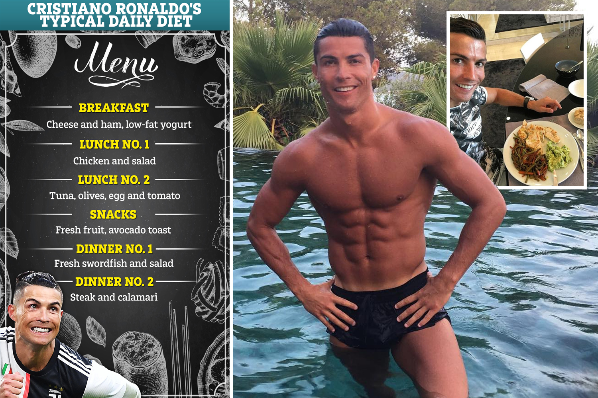

Alimentazione

Cristiano Ronaldo è uno dei più grandi calciatori di tutti i tempi, noto non solo per i suoi successi in campo, ma anche per il suo stile di vita impeccabile. Nato a Madeira nel 1985, ha costruito una carriera straordinaria con club come Manchester United, Real Madrid, Juventus e Al Nassr, vincendo numerosi titoli e battendo record. Fuori dal campo, Ronaldo è un esempio di disciplina, con un regime di allenamento rigoroso, una dieta attenta e un impegno costante per il benessere fisico e mentale. Il suo approccio alla vita, alla carriera e alla famiglia lo ha reso un modello di successo per milioni di persone in tutto il mondo.